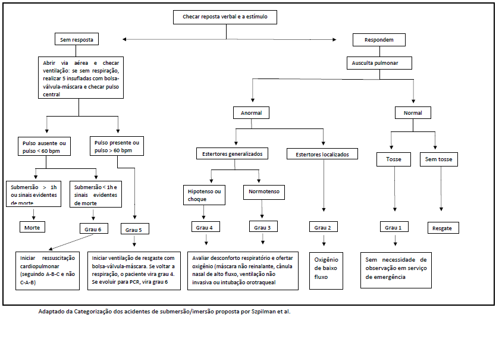

AFOGAMENTO
Introdução
O termo afogamento é definido como comprometimento respiratório pela submersão ou imersão em um meio líquido, normalmente água.
A primeira reação voluntária de uma vítima de afogamento é jogar a água para fora da boca e em seguida prender a respiração por um determinado tempo. Quando a água entra na via aérea, o reflexo é de tosse, seguido de um quadro de laringoespasmo de curta duração; no caso de aspiração de água, ocorrerá hipóxia seguida de perda de consciência e, consequentemente, apneia.
Em relação ao sistema cardiocirculatório, há inicialmente um quadro de taquicardia, evoluindo para bradicardia seguida de atividade elétrica sem pulso e, por fim, assistolia. Se a pessoa é resgatada viva, o quadro clínico é determinado predominantemente pela quantidade de água que foi aspirada e os seus efeitos. O quadro clínico causado pela alteração na membrana alveolar-capilar se traduz em edema pulmonar.
Atendimento Pré-hospitalar
Nos casos de afogamento, a causa da parada cardiorrespiratória (PCR) é a hipóxia; portanto, em todo o atendimento, deve-se seguir a sequência A-B-C (via aérea – respiração-cardíaca), em vez de C-A-B (cardíaca – via aérea – respiração), conforme é preconizado no curso de Basic Life Support (BLS).
Após retirar a vítima da água, deve-se colocá-la em decúbito dorsal. Inicialmente segue-se a mesma sequência do BLS. No caso de a vítima não apresentar respiração espontânea, deve-se iniciar o atendimento com cinco respirações de resgate em razão da maior dificuldade do ar de chegar no pulmão. Após a realização da respiração de resgate inicial, checa-se o pulso central do paciente. Se não houver pulso, deve-se pedir para outra pessoa pegar o desfibrilador elétrico automático (DEA), chamar o resgate e iniciar a compressão torácica. A partir deste momento, segue-se o algoritmo de PCR, conforme preconizado pela BLS. Se houver pulso, mas o paciente não tiver respiração espontânea, deve-se continuar com as respirações de resgate até a recuperação da respiração espontânea ou o paciente evoluir com PCR.
Classificação do afogamento
Quanto à Gravidade do Afogamento:
Resgate: Vítima resgatada viva da água que não apresenta tosse ou espuma na boca e/ou nariz - pode ser liberada no local sem necessitar de atendimento médico após avaliação do socorrista, quando consciente. Todos os casos podem apresentar hipotermia, náuseas, vômitos, distensão abdominal, tremores, cefaleia (dor de cabeça), mal-estar, cansaço, dores musculares, dor no tórax, diarreia e outros sintomas inespecíficos.
Afogamento: pessoa resgatada da água que apresenta evidência de aspiração de líquido: tosse ou espuma na boca ou nariz – avaliar sua gravidade no local do acidente (vide fluxograma em anexo).
Grau 6 – Parada cardiorrespiratória – Iniciar ressuscitação cardiopulmonar (seguindo A-B-C e não C-A-B). A ressuscitação iniciada por leigos ou guarda-vidas deve ser mantida na cena pelo pessoal médico especializado e, assim que seja possível, realizar a intubação orotraqueal. A aspiração das vias aéreas antes da intubação é geralmente necessária, mas não deve ser excessiva a ponto de prejudicar a própria ventilação. Uma vez intubada, a vítima pode ser ventilada e oxigenada adequadamente, mesmo na presença de edema pulmonar. A PCR em afogamentos ocorre 100% em assistolia quando não existem co-morbidades ou fatores precipitantes ao afogamento. O acesso venoso periférico é a via preferencial para administrar drogas. Quanto a adrenalina, a recomendação é que se utilize uma dose inicial de 0,01 mg/kg EV após 3 minutos de RCP e, caso não haja resposta, aumentar para 0,1 mg/kg infundida a cada 3 a 5 minutos de RCP.
Grau 5 – Parada Respiratória – A vítima em apneia exige ventilação artificial (bolsa, válvula, máscara) imediata. Os protocolos de ventilação e oxigenação, que são os mesmos do Grau 6, devem ser seguidos até que a respiração espontânea seja restaurada, o que usualmente ocorre após poucas ventilações, e, então, seguir os protocolos para o Grau 4.
Grau 4 – Edema Agudo de Pulmão com Hipotensão Arterial – Fornecer oxigênio com suporte de ventilação mecânica é a terapia de primeira linha. Inicialmente o oxigênio deve ser fornecido por máscara não reinalante, cânula nasal de alto fluxo ou ventilação não invasiva até que o tubo orotraqueal possa ser introduzido. O afogado grau 4 necessita de intubação orotraqueal em 100% dos casos devido à necessidade de ventilação com pressão positiva.
Grau 3 – Edema agudo de Pulmão sem Hipotensão Arterial – Vítimas com SaO2p > 90% em uso de oxigênio via máscara facial conseguem permanecer sem TOT e ventilação mecânica em apenas 27,6% dos casos. A maioria dos casos (72,4%) necessitam de intubação e ventilação mecânica, observando-se os mesmos protocolos para os afogados Grau 4.
Grau 2 – Ausculta Pulmonar com Estertores – 93,2% das vítimas com este quadro clínico necessitam apenas de 5 l/min de oxigênio via cânula nasofaríngea e tem uma recuperação satisfatória em 6 a 24h com observação hospitalar.
Grau 1 – Tosse com Ausculta Pulmonar Normal – Estes pacientes não necessitam de oxigênio ou suporte ventilatório e podem ser liberados a suas residências caso não exista co-morbidades ou doença associada.
Indicações de internação
Cuidados hospitalares são indicados para afogados de Graus 2 a 6.
Exames complementares necessários: Hemograma, dosagem de eletrólitos, ureia, creatinina, radiografia de tórax e gasometria arterial. A acidose metabólica ocorre na maioria dos pacientes e é geralmente corrigida pelo aumento espontâneo da ventilação do paciente. O uso rotineiro de bicarbonato de sódio não é recomendado.
Os casos de grau 2 são resolvidos com oxigênio não invasivo no prazo de 6 a 24 horas e podem, então, ser liberados para casa.
Pacientes grau 3 a 6, geralmente precisam de intubação e ventilação mecânica e devem sem internados em unidade de terapia intensiva.
Complicações no curso do tratamento:
O pneumotórax é uma complicação comum (10%), secundária à ventilação mecânica com pressão positiva em áreas de hiperinflação. Diante de qualquer mudança hemodinâmica brusca, após o início da ventilação mecânica, deve ser considerada a possibilidade de um pneumotórax ou outro barotrauma
Quadros de síndrome de reação inflamatória sistêmica (SIRS) ou choque séptico são descritos nas primeiras 24 horas após a ressuscitação da vítima
A insuficiência renal aguda secundária ao afogamento é rara
A pneumonia é, muitas vezes, diagnosticada inicialmente de forma errada devido ao aparecimento precoce de imagem radiográfica nos pulmões. O antibiótico terapêutico está indicado quando existe febre e leucocitose persistente por mais de 48/72h, coadjuvante à permanência ou ao aparecimento de um novo infiltrado pulmonar.
Prognóstico
Afogamento grau 1 a 5 recebem alta hospitalar em 95% dos casos sem sequelas. Os afogamentos grau 6 podem evoluir com falência de múltiplos órgãos. Com o processo de terapia intensiva, o prognóstico é cada vez mais baseado na lesão neurológica
Referências bibliográficas
Schvartsman C, Reis AG, Farhat SCL. Acidentes por submersão/imersão. Pediatria HC/FMUSP: pronto-socorro 2018; 3:291-7.
Szpilman D, Bierens JJLM, Handley AJ, Orlowski JP. Drowning: Current Concepts. N Engl J Med 2012; 366:2102-10.
Szpilman D. Diretriz de Ressuscitação 2017.
Gonzalez M.M., Timerman S., Gianotto-Oliveira R., Polastri T.F., Canesin M.F., Lage S.G., et al. Sociedade Brasileira de Cardiologia. I Diretriz de Ressuscitação Cardiopulmonar e Cuidados Cardiovasculares de Emergência da Sociedade Brasileira de Cardiologia. Arq Bras Cardiol. 2013; 101(2Supl.3): 87-8.
Responsável pela elaboração da rotina: Dra. Bárbara Rios Vellasco de Amorim Vieira
